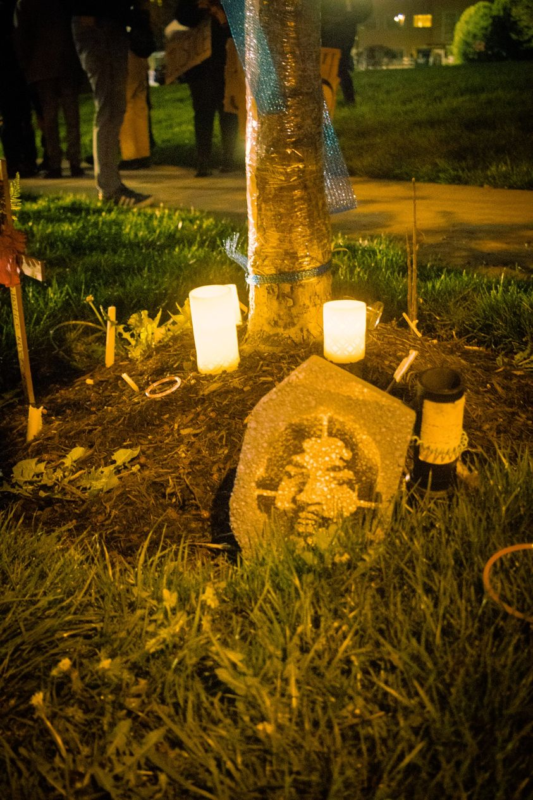

Timeline photos
This is the memorial that was created near where Jayland Walker was shot and killed. It's at East Wilbeth and South Main. I took this picture at a very peaceful protest last night.
I kept coming back to this little tree. I'd take pictures from different angles. Like in hopes that it would tell me something that made sense. That it would tell me what to do next.
It's not entirely true that it was all peaceful. A person in a pickup truck barged into the scene actually trying to run people over. A woman in a car was doing the same and was yelling, "You're going to end up just like Jayland."
A semi-truck driver got stuck in the traffic block. A young Black man came over to start to offer some ideas on how to get him out of there. But the (white) truck driver just started swearing and yelling "all lives matter" and "white lives matter." The Black man just walked away.
Part of me is envious of the rage these conservative white people have. Why do conservatives come with such fury? Why do progressives get so bogged down in our heads?
That's where I am right now. I'm just mentally bogged down.
All I've ever wanted to do is try to make the system just a little better. And I've been fought every step of the way. I can't get anything done.
I was taking pictures last night. A person I really respect came to me and said that I was making people nervous with my camera. I just left. I mean, who cares if I take some pictures? Who cares if I try to tell the story? Who cares?
Who cares?